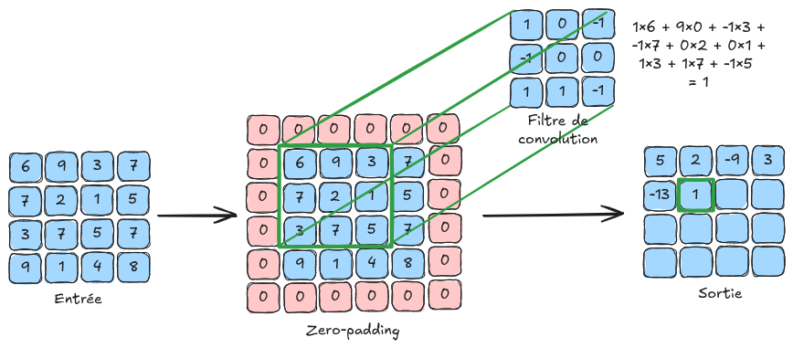

Les couches de convolution#
Pourquoi utiliser les convolutions ?#
Dans les cours précédents, on a utilisé des réseaux de neurones entièrement connectés (ou Fully Connected) sur des images. Pour rappel, on a utilisé le dataset MNIST, composé d’images en nuance de gris de taille \(28 \times 28\), pour introduire la régularisation, la normalisation et montrer le potentiel des réseaux de neurones pour le traitement d’images.
Cependant, l’entrée du réseau était de taille \(28 \times 28 = 784\), ce qui est déjà une taille d’entrée assez grande pour un réseau de neurones, malgré la petite taille de l’image. Pour une image de taille \(224 \times 224 \times 3\) (petite image selon les standards actuels), on aurait une taille d’entrée de \(150528\), ce qui est inenvisageable pour un traitement rapide.
Solutions possibles#
Réduire la taille des images#
Pour résoudre ce problème, on peut envisager de redimensionner l’image d’entrée. Cependant, en faisant cela, la perte d’informations est trop importante et on ne reconnaît même plus l’objet sur l’image.
import matplotlib.pyplot as plt
from PIL import Image
img=Image.open("images/SampleImageNet.JPEG").resize((224,224))
imgResized_64=img.resize((64,64))
imgResized_28=img.resize((28,28))
fig, axes = plt.subplots(1, 3, figsize=(15, 5))
axes[0].imshow(img)
axes[0].set_title("Original")
axes[0].axis('off')
axes[1].imshow(imgResized_64)
axes[1].set_title("64x64")
axes[1].axis('off')
axes[2].imshow(imgResized_28)
axes[2].set_title("28x28")
axes[2].axis('off')
plt.show()

Comme on peut le voir, le redimensionnement n’est pas une bonne solution, surtout si on a besoin d’identifier des détails de l’image pour une classification ou une détection efficace.
Première couche cachée très limitée#
Une entrée de taille \(150528\) est d’autant plus problématique lorsqu’on a une première couche cachée avec un grand nombre de neurones. En effet, les poids correspondent à chaque connexion entre deux neurones de couches successives. Si on suppose que la première couche cachée a \(1024\) neurones, on aurait \(150528*1024 = 154 \text{ millions}\) de poids, ce qui est colossal pour uniquement la liaison entre les deux premières couches.
On pourrait envisager d’avoir une première couche cachée avec seulement quelques dizaines de neurones pour limiter le nombre de poids. Cependant, réduire drastiquement la dimension entraîne une perte considérable d’informations, ce qui empêche d’obtenir des résultats satisfaisants avec cette approche.
Les convolutions#
Intuition : Une particularité des images est la présence de motifs récurrents. À partir de cette idée, on peut envisager un partage de poids entre les différents pixels de l’image.
Principe de base : Cela nous conduit à l’utilisation des couches de convolutions, qui utilisent des filtres de convolutions parcourant chaque pixel de l’image. Les valeurs de ces filtres sont entraînables et correspondent aux poids du réseau de neurones.
Voici une illustration du principe de convolution :

Pourquoi ça marche ? :
L’utilisation des couches de convolutions permet de ne pas augmenter le nombre de poids en fonction de la taille de l’image, ce qui permet de traiter des images de résolution importante.
La couche de convolution permet une invariance à la translation, ce qui est très intéressant pour une image (une image de chien décalée de 4 pixels reste une image de chien).
Même si le traitement de l’information est local sur une couche de convolution, la succession de couches de convolutions permet d’avoir un traitement global de l’image (voir partie sur le champ réceptif dans le notebook suivant).
Informations supplémentaires :
Sur la figure d’explication, l’image d’entrée est de taille \(4 \times 4\). En pratique, une image couleur contient \(3\) canaux. Pour traiter une image de taille \(4 \times 4 \times 3\), on utiliserait des filtres de taille \(n \times n \times 3\) avec \(n\) la taille du filtre (\(3\) sur la figure d’explication). Il faut retenir que la profondeur du filtre de convolution dépend du nombre de canaux de l’entrée de la couche.
On peut voir la convolution comme une boucle for appliquée sur une couche fully connected, où un petit filtre (avec des poids partagés plutôt que des poids uniques par connexion) glisse sur l’image pour détecter les motifs locaux. On gagne énormément en efficacité et on permet le partage des poids, ce qui limite grandement les nécessités en termes de mémoire.
Détail des couches de convolution#
Nous allons maintenant détailler les différents paramètres d’une couche de convolution en se basant sur les paramètres d’entrée de la fonction torch.nn.Conv2d de PyTorch.
Pour plus de clarté, la sortie d’une couche de convolutions est appelée FeatureMap.
in_channels : Le nombre de canaux en entrée de la couche (permet de définir la profondeur des filtres de convolutions utilisés).
out_channels : Le nombre de filtres de convolutions utilisés dans la couche (correspond également au nombre de canaux de la FeatureMap de sortie).
kernel_size : La taille d’un filtre de convolution. Si ce paramètre vaut \(3\), alors le filtre de convolution est de taille \(3 \times 3\). Tous les filtres de convolution d’une même couche ont forcément la même taille.
stride : Le stride correspond au pas de l’application du filtre de convolution. Par exemple, un stride de \(1\) signifie qu’il faut appliquer le filtre sur tous les pixels, tandis qu’un stride de \(2\) signifie qu’il faut l’appliquer sur un pixel sur deux. Un stride important a pour effet de réduire la dimension de l’image (avec un stride de 2, la FeatureMap de sortie sera 2 fois plus petite qu’avec un stride de 1).
padding : Ce paramètre ajoute une bordure de taille padding autour de l’image pour permettre aux filtres d’être appliqués uniformément sur tous les pixels, y compris ceux des bords. Sans padding, les pixels en bordure n’auraient pas de voisins et le filtre ne pourrait pas être appliqué, ce qui réduirait la taille de l’image lors de la convolution. Le padding remédie à cela en ajoutant des valeurs (comme des zéros ou des valeurs réfléchies) autour de l’image avant d’appliquer les filtres (voir zero-padding sur la figure d’explication).
padding_mode : Permet de sélectionner le mode de padding (“zeros” pour zero-padding par exemple).
dilation : Le paramètre dilation dans une couche de convolution définit l’espacement entre les éléments du filtre, permettant à ce dernier de couvrir une zone plus large sans augmenter la taille du filtre, ce qui capture davantage de contexte spatial dans l’image. La figure suivante illustre la dilation :

Figure extraite de Du, Jinglong & Wang, Lulu & Liu, Yulu & Zhou, Zexun & He, Zhongshi & Jia, Yuanyuan. (2020). Brain MRI Super-Resolution Using 3D Dilated Convolutional Encoder–Decoder Network. IEEE Access. PP. 1-1. 10.1109/ACCESS.2020.2968395.
Les couches de pooling#
Une autre couche fondamentale des réseaux de neurones convolutifs est la couche de pooling. C’est une couche qui ne contient aucun paramètre apprenable et qui se contente de redimensionner la feature map à l’aide d’une technique de regroupement de pixels adjacents. Dans le notebook suivant, on verra comment cette couche s’utilise dans un réseau de neurones convolutif. Les couches de pooling ont aussi pour effet de réduire la sensibilité aux décalages et aux distorsions de motifs pour une plus grande généralisation.
Il existe 2 types principaux de pooling : MaxPooling : Le MaxPooling est la méthode de pooling qui consiste à prendre la valeur maximum d’un groupe de pixels adjacents et de la définir comme nouvelle valeur de l’image réduite. AveragePooling : L’AveragePooling prend la valeur moyenne du groupe de pixels adjacents et la définit comme nouvelle valeur de l’image réduite.
La figure suivante montre les différences entre le MaxPooling et l’AveragePooling :